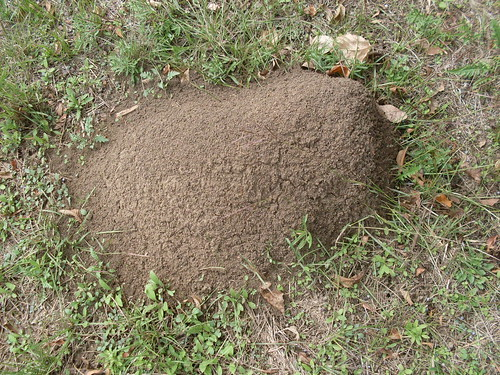
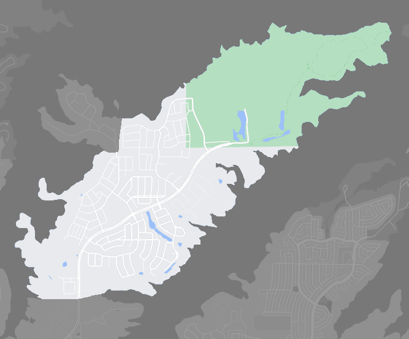

|  |
|---|
| The first photograph of RSE-008 |
RSE-008 is a mid-to-high-class gated suburban neighborhood in Ableton, Grushia, formerly known as ‘The Accolade,’ which now serves as a 1,600 acre community to various species of ants in the genus Solenopsis. RSE-008 previously provided homes to over 60,000 citizens and was one of the largest gated communities in Salmon County, Grushia.
RSE-008 started out as an average size fire ant mound, unusually at the mathematically perfect center of the community. This mound was discovered and photographed on January 14, 2006. Three days after the photo was taken, RSE-008 had quickly expanded to roughly six feet in diameter. By January 19, RSE-008 was growing exponentially, and had expanded to be fourteen feet in diameter. The HOA was notified of this shortly after and began to evacuate homeowners immediately. RSE-008 thereafter continued expanding, and reached its current size on February 18, 2006. RSE-008 has not expanded since.
The species of ants residing in RSE-008, classified as RSE-008-1, have been noted as being unusually intelligent in nature, responding to attacks by outside species with similar behavior to that of the Panthera tigris genus. RSE-008-1 specimen are incredibly defensive and have been observed exiting RSE-008 solely to attack invading threats. Despite this ability to exit, these RSE-008-1 specimen have not shown any sign of attempting expansion outside of RSE-008.
Shortly after the expansion of RSE-008 to its current size, RSE Association personnel were notified in order to keep the area under control. RSE-008 is located approximately 800 kilometers away from Location 01, and many site personnel were relocated to temporary living areas in the surrounding area. Thirty meter tall concrete walls were constructed surrounding RSE-008 with the only entrance - located on the south end of the community - being able to be accessed by Level 4 Clearance.
|  |
|---|
| A map of the community taken over by RSE-008 |